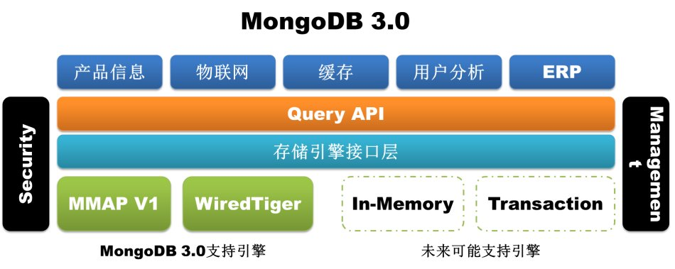
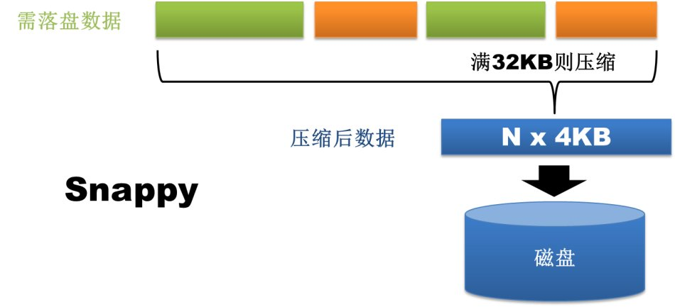
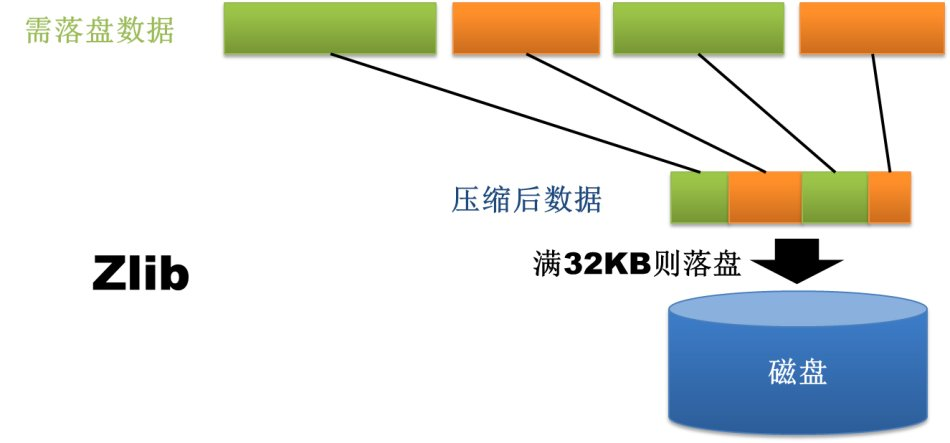

Mongo DB 是目前在IT行业非常流行的一种非关系型数据库(NoSql),其灵活的数据存储方式备受当前IT从业人员的青睐。
菜鸟教程也紧追其步伐，已经教程内容更新至 3.0 版本。教程的的实例在 3.0版本中测试通过。
以下内容为 3.0 版本的新增特性：
插件式存储引擎API
MongoDB3.0引入了插件式存储引擎API，为第三方的存储引擎厂商加入MongoDB提供了方便，这一变化无疑参考了MySQL的设计理念。目前除了早期的MMAP存储引擎外，WiredTiger和RocksDB均已完成了对MongoDB的支持，前者更是在被MongoDB公司收购后更是直接引入到了MongoDB3.0版本中。插件式存储引擎API的引入为MongoDB丰富自己武器库以处理更多不同类型的业务提供了无限可能，内存存储引擎、事务存储引擎甚至Hadoop在未来都有可能接入进来。


WiredTiger存储引擎
如果说插件式存储引擎API为MongoDB3.0打造了一个武器库，那么WiredTiger绝对是武器库中第一枚也是最重要的一枚重磅炸弹。因为MMAP存储引擎自身的天然缺陷（耗费磁盘空间和内存空间且难以清理，库级别锁），MongoDB为数据库运维人员带来了极大痛苦，甚至一部分人已经开始转向TokuMX，尽管后者目前也不甚稳定。意识到这一问题的MongoDB，做出了有钱任性的决定，直接收购存储引擎厂商WiredTiger，将WiredTiger存储引擎集成进3.0版本（仅在64位版本中提供）。那么这款走到聚光灯下的存储引擎究竟具备哪些值得期待的特性呢？
1、文档级别并发控制
WiredTiger通过MVCC实现文档级别的并发控制，即文档级别锁。这就允许多个客户端请求同时更新一个集合内存的多个文档，再也不需要在排队等待库级别的写锁。这在提升数据库读写性能的同时，大大提高了系统的并发处理能力。关于这一点的效果从监控工具mongostat就可以直接体现出来，旧版本的监控指标会有lockeddb这一项（该项指标过高是mongo使用人员的一大痛点啊），而新版的mongostat已经看不到了。

MongoDB 2.4.12版本
$/home/mongodb/mongodb-linux-x86_64-2.4.12/bin/mongostat –port55060 insert query update delete getmore command flushes mapped vsize resfaults locked db idxmiss % qr|qw ar|aw netIn netOut conntime *0 *0 *0 *0 0 1|0 0 18g 18.3g 16.1g 0 ycsb:0.0% 0 0|00|0 62b 2k 1 13:04:01 *0 *0 *0 *0 0 1|0 0 18g 18.3g 16.1g 0 ycsb:0.0% 0 0|00|0 62b 2k 1 13:04:02 *0 *0 *0 *0 0 1|0 0 18g 18.3g 16.1g 0 ycsb:0.0% 0 0|00|0 62b 2k 1 13:04:03
MongoDB 3.0 rc8版本
$/home/mongodb/mongodb-linux-x86_64-3.0.0-rc8/bin/mongostat –port55050 insert query update delete getmore command % dirty % used flushesvsize res qr|qw ar|aw netIn netOut conntime *0 *0 *0 *0 0 1|0 0.0 42.2 0 30.6G 30.4G 0|0 0|0 79b 16k 113:02:38 *0 *0 *0 *0 0 1|0 0.0 42.2 0 30.6G 30.4G 0|0 0|0 79b 16k 113:02:39 *0 *0 *0 *0 0 1|0 0.0 42.2 0 30.6G 30.4G 0|0 0|0 79b 16k 113:02:40
2、磁盘数据压缩
WiredTiger支持对所有集合和索引进行Block压缩和前缀压缩（如果数据库启用了journal，journal文件一样会压缩），已支持的压缩选项包括：不压缩、Snappy压缩和Zlib压缩。这为广大Mongo使用者们带来了又一福音，因为很多Mongo数据库都是因为MMAP存储引擎消耗了过多的磁盘空间而不得已进行扩容。其中Snappy压缩为数据库的默认压缩方式，用户可以根据业务需求选择适合的压缩方式。理论上来说，Snappy压缩速度快，压缩率OK，而Zlib压缩率高，CPU消耗多且速度稍慢。当然，只要选择使用压缩，Mongo肯定会占用更多的CPU使用率，但是考虑到Mongo本身并不是十分耗CPU，所以启用压缩完全是值得的。


此外，WiredTiger存储方式上也有很大改进。旧版本Mongo在数据库级别分配文件，数据库中的所有集合和索引都混合存储在数据库文件中，所以即使删掉了某个集合或者索引，占用的磁盘空间也很难及时自动回收。WiredTiger在集合和索引级别分配文件，数据库中的所有集合和索引均存储在单独的文件中，集合或者索引删除后，对应的存储文件随即删除。当然，因为存储方式不同，低版本的数据库无法直接升级到WiredTiger存储引擎，只能通过导出导入数据的方式来实现。
MongoDB 2.4.12版本
[mongodb@mongo-data-emergency-001.m6.momo.com mongodb_2_4_12]$ll drwxrwxr-x 3 mongodb mongodb 4096 2月 25 19:03local -rwxrwxr-x 1 mongodb mongodb 6 2月 25 19:04mongod.lock drwxrwxr-x 2 mongodb mongodb 4096 2月 27 18:30_tmp drwxrwxr-x 3 mongodb mongodb 4096 2月 27 18:39ycsb [mongodb@mongo-data-emergency-001.m6.momo.com mongodb_2_4_12]$ llycsb/ drwxrwxr-x 2 mongodb mongodb 4096 2月 27 18:39_tmp -rw——- 1 mongodb mongodb 67108864 2月 27 18:57ycsb.0 -rw——- 1 mongodb mongodb 134217728 2月 27 18:57ycsb.1 -rw——- 1 mongodb mongodb 2146435072 2月 27 18:57ycsb.10 -rw——- 1 mongodb mongodb 2146435072 2月 27 18:57ycsb.11 -rw——- 1 mongodb mongodb 2146435072 2月 27 18:57ycsb.12 -rw——- 1 mongodb mongodb 2146435072 2月 27 18:39ycsb.13 -rw——- 1 mongodb mongodb 268435456 2月 27 18:57ycsb.2 -rw——- 1 mongodb mongodb 536870912 2月 27 18:57ycsb.3 -rw——- 1 mongodb mongodb 1073741824 2月 27 18:57ycsb.4 -rw——- 1 mongodb mongodb 2146435072 2月 27 18:57ycsb.5 -rw——- 1 mongodb mongodb 2146435072 2月 27 18:57ycsb.6 -rw——- 1 mongodb mongodb 2146435072 2月 27 18:57ycsb.7 -rw——- 1 mongodb mongodb 2146435072 2月 27 18:57ycsb.8 -rw——- 1 mongodb mongodb 2146435072 2月 27 18:57ycsb.9 -rw——- 1 mongodb mongodb 16777216 2月 27 18:40ycsb.ns
[mongodb@mongo-data-emergency-001.m6.momo.com mongodb_3_0_0]$ll drwxrwxr-x 2 mongodb mongodb 4096 2月 28 18:32local -rw-rw-r– 1 mongodb mongodb 36864 3月 21 13:41_mdb_catalog.wt -rwxrwxr-x 1 mongodb mongodb 6 2月 28 18:32mongod.lock -rw-rw-r– 1 mongodb mongodb 36864 3月 21 13:42sizeStorer.wt -rw-rw-r– 1 mongodb mongodb 95 2月 28 18:32storage.bson -rw-rw-r– 1 mongodb mongodb 49 2月 28 18:32WiredTiger -rw-rw-r– 1 mongodb mongodb 433 2月 28 18:32WiredTiger.basecfg -rw-rw-r– 1 mongodb mongodb 21 2月 28 18:32WiredTiger.lock -rw-rw-r– 1 mongodb mongodb 921 3月 21 13:41WiredTiger.turtle -rw-rw-r– 1 mongodb mongodb 53248 3月 21 13:41WiredTiger.wt drwxrwxr-x 2 mongodb mongodb 4096 3月 21 13:41ycsb [mongodb@mongo-data-emergency-001.m6.momo.com mongodb_3_0_0]$ llycsb/ -rw-rw-r– 1 mongodb mongodb 19314257920 2月 2819:16 collection-4–1318477584648278106.wt -rw-rw-r– 1 mongodb mongodb 602112 3月 2113:40 collection-6–1318477584648278106.wt -rw-rw-r– 1 mongodb mongodb 262598656 2月 2818:53 index-5–1318477584648278106.wt -rw-rw-r– 1 mongodb mongodb 827392 3月 2113:40 index-7–1318477584648278106.wt -rw-rw-r– 1 mongodb mongodb 1085440 3月 2113:41 index-8–1318477584648278106.wt
3、可配置内存使用上限
WiredTiger支持内存使用容量配置，用户通过storage.wiredTiger.engineConfig.cacheSizeGB参数即可控制MongoDB所能使用的最大内存，该参数默认值为物理内存大小的一半。这也为广大Mongo使用者们带来了又一福音，MMAP存储引擎消耗内存是出了名的，只要数据量够大，简直就是有多少用多少。
MMAPv1存储引擎提升
MongoDB3.0出了引入WiredTiger外，对于原有的存储引擎MMAP也进行了一定的完善，该存储引擎依然是3.0版的默认存储引擎。遗憾的是改进后的MMAP存储引擎依旧在数据库级别分配文件，数据库中的所有集合和索引都混合存储在数据库文件中，所以磁盘空间无法及时自动回收的问题如故。
1、锁粒度由库级别锁提升为集合级别锁
这在一定程度上也能够提升数据库的并发处理能力。
2、文档空间分配方式改变
在MMAP存储引擎中，文档按照写入顺序排列存储。如果文档更新后长度变长且原有存储位置后面没有足够的空间放下增长部分的数据，那么文档就要移动到文件中的其他位置。这种因更新导致的文档位置移动会严重降低写性能，因为一旦文档发生移动，集合中的所有索引都要同步修改文档新的存储位置。
MMAP存储引擎为了减少这种情况的发生提供了两种文档空间分配方式：基于paddingFactor（填充因子）的自适应分配方式和基于usePowerOf2Sizes的预分配方式，其中前者为默认方式。第一种方式会基于每个集合中文档更新历史计算文档更新的平均增长长度，然后在新文档插入或旧文档移动时填充一部分空间，如当前集合paddingFactor的值为1.5，那么一个大小为200字节的文档插入时就会自动在文档后填充100个字节的空间。第二种方式则不考虑更新历史，直接为文档分配2的N次方大小的存储空间，如一个大小同样为200字节的文档插入时直接分配256个字节的空间。
MongoDB3.0版本中的MMAPv1抛弃了基于paddingFactor的自适应分配方式，因为这种方式看起来很智能，但是因为一个集合中的文档的大小不一，所以经过填充后的空间大小也不一样。如果集合上的更新操作很多，那么因为记录移动后导致的空闲空间会因为大小不一而难以重用。目前基于usePowerOf2Sizes的预分配方式成为默认的文档空间分配方式，这种分配方式因为分配和回收的空间大小都是2的N次方（当大小超过2MB时则变为2MB的倍数增长），因此更容易维护和利用。如果某个集合上只有insert或者in-placeupdate，那么用户可以通过为该集合设置noPadding标志位，关闭空间预分配。

复制集改进
1、复制集成员增长
MongoDB3.0的复制集成员的最大个数由之前的12个增长为50个，但能够投票的最大成员个数依然为7个，而相应的getLastError中的 w:"majority" 项也仅代表投票节点的大多数。
2、Primary节点StepDown处理方式变化
在复制集中通过replSetStepDown命令可以使得当前的Primary节点退位，重新选举新的Primay节点。MongoDB3.0在StepDown的处理方式上做了如下修改：1）在Primary退位之前，会首先中断某些耗时较长的用户操作如创建索引、写操作、Mapreduce任务等；2）为了防止数据回滚，Primary节点在退位之前会等待一个可被选举的Secondary节点同步到最新数据，而旧版本中Primary节点只要有Secondary节点的数据同步到10秒以内就退位；3）同时replSetStepDown命令新增了一个secondaryCatchUpPeriodSecs参数，用户可以指定Primary节点等待有Secondary节点的数据同步到该参数指定的秒数内就退位。
分片集群改进
1、新增工具函数 sh.removeTagRange()
旧版本中只有sh.addTagRange()，如果要删除tagRange只能手工到config.tags集合中删除。
2、提供更可预测的Read Preference处理
新版本中mongos实例在执行读操作时不再将连接固定在复制集成员上，而是对每个读操作都会重新评估ReadPreference。这样当Read Preference修改时，其行为更容易预测。
3、为chunk迁移提供writeConcern设置
新版本针对均衡器为moveChunk和cleanupOrphaned这两个涉及到chunk迁移的命令提供了writeConcern参数。
4、增加均衡器状态显示
新版本中通过sh.status()可以看到均衡器的状态信息。
其他改动
1、优化explan函数
新版本explain函数可以支持count，find，group，aggregate，update，remove等操作的查询计划显示，结果更全面更精细。
2、重写mongodb工具
新版本所有mongodb自带工具均使用Go语言重写，特别是在mongodump和mongorestore添加了并行机制，这样可以大大加快数据的导出和导入。
3、日志输出控制
新版本中将日志分为不同的模块，其中包括ACCESS、COMMAND、CONTROL、GEO、INDEX、NETWORK、QUERY、REPL、SHARDING、STORAGE、JOURNAL和WRITE等。用户可以动态调整每个模块的日志级别，这无疑更有利于系统问题诊断。
4、 索引构建优化
后台索引建立过程中，不能进行删库删表删索引操作，且后台索引建立过程不会因此自动中断。另外，使用createIndexes命令可以同时建立多个索引，并且只扫描一遍数据，提升了建索引的效率。
总结
以上仅列出了MongoDB 3.0的一些主要特性和修改，如果希望了解更多可以查看MongoDB 3.0的Release-Notes。总体来看，MongoDB3.0提供了较多令人惊喜的新特性，也使人们更加看好其未来的发展。
点我分享笔记
<p style="font-size:14px;">笔记需要是本篇文章的内容扩展！</p><br> <p style="font-size:12px;"><a href="../tougao.html" target="_blank">文章投稿，可点击这里</a></p> <p style="font-size:14px;"><a href="./runoob-user-test-intro.html" target="_blank">注册邀请码获取方式</a></p> <h3 class="text-muted"><i class="fa fa-info-circle" aria-hidden="true"></i> 分享笔记前必须<a href=".." class="runoob-pop">登录</a>！</h3> <p><a href="./runoob-user-test-intro.html" target="_blank">注册邀请码获取方式</a></p>